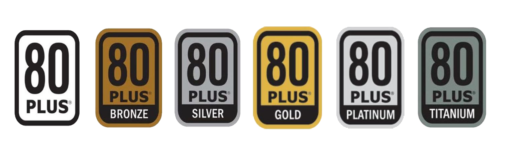

Understanding the components of a computer is essential for building a custom PC. Each part plays a crucial role in the overall performance and functionality of the system. Below are the main components and their functions:
Click on the links below to learn more about each component:
The CPU is the brain of the computer, responsible for executing instructions. A faster CPU can handle more tasks simultaneously and improve overall performance, especially in tasks like gaming, video editing, and programming.
Below are the popular CPU brands, socket types, supported generations, and their pros and cons:
Popular Socket Types: LGA 1200, LGA 1700
Supported Generations: 10th Gen (Comet Lake), 11th Gen (Rocket Lake), 12th Gen (Alder Lake), 13th Gen (Raptor Lake), 14th Gen (Meteor Lake)
Pros: High single-core performance, excellent for gaming, wide compatibility with motherboards.
Cons: Generally more expensive, limited overclocking on non-K series CPUs.
Popular Socket Types: AM4, AM5
Supported Generations: Ryzen 3000 (Zen 2), Ryzen 5000 (Zen 3), Ryzen 7000 (Zen 4), Ryzen 9000 (Zen 5)
Pros: Excellent multi-core performance, better value for productivity tasks, unlocked CPUs for overclocking.
Cons: Slightly lower single-core performance compared to Intel in some cases, fewer motherboard options for newer sockets.
RAM temporarily stores data that the CPU needs to access quickly. More RAM allows for smoother multitasking and better performance in memory-intensive applications like graphic design or virtual machines.
Below are the most popular types of RAM:
The most common type of RAM, offering high speed and efficiency. Suitable for most modern systems.
latest generation of RAM, providing faster speeds and improved power efficiency compared to DDR4. Ideal for high-performance systems.
Used in servers and workstations to detect and correct memory errors, ensuring data integrity.
A compact form factor of RAM designed for laptops and small form factor PCs. It provides similar performance to standard DIMMs but in a smaller size.
Storage devices hold your data and operating system. Below are the types of storage:
Traditional storage device with spinning disks. It offers large capacities at a lower cost but is slower compared to SSDs.
Faster storage with no moving parts. It provides quicker boot times, faster file transfers, and improved application loading speeds.
A form factor for SSDs that connects directly to the motherboard. It is compact and often faster than traditional SATA SSDs.
A protocol for SSDs that offers significantly faster data transfer speeds compared to SATA SSDs, ideal for high-performance tasks.
The GPU handles rendering images, videos, and 3D graphics. A powerful GPU is essential for gaming, video editing, and 3D modeling, as it significantly impacts visual performance.
Below are the main GPU manufacturers, their board partners, and the pros and cons of each:
Board Partners: ASUS, MSI, Gigabyte, EVGA, Zotac, PNY
Pros: Excellent ray tracing performance, advanced features like DLSS (Deep Learning Super Sampling), wide range of options for gaming and professional use.
Cons: Generally more expensive, higher power consumption on high-end models.
Board Partners: ASUS, MSI, Gigabyte, Sapphire, PowerColor, XFX
Pros: Competitive pricing, strong performance in rasterization, good value for mid-range and budget builds.
Cons: Ray tracing performance lags behind NVIDIA, fewer features like DLSS (though FSR is improving).
Board Partners: ASUS, MSI, Gigabyte (limited availability as Intel GPUs are newer to the market)
Pros: Affordable entry-level options, improving driver support, good for casual gaming and productivity tasks.
Cons: Limited high-end options, smaller ecosystem compared to NVIDIA and AMD.
The motherboard connects all components of the computer. A high-quality motherboard ensures compatibility, better connectivity, and can support overclocking for improved performance.
Motherboards come in various sizes and chipset types:

E-ATX (Extended ATX): Larger than ATX, offers more space for additional components, ideal for high-end builds.
ATX: Standard size with multiple expansion slots, suitable for most builds.
Micro-ATX: Smaller than ATX, fewer expansion slots, ideal for compact builds.
Mini-ITX: Very compact, limited slots, great for small form factor systems.
Entry-Level: Basic features, suitable for budget builds (e.g., Intel H-series, AMD A-series).
Mid-Range: More connectivity and features, supports overclocking (e.g., Intel B-series, AMD B-series).
High-End: Advanced features, multiple PCIe lanes, ideal for enthusiasts (e.g., Intel Z-series, AMD X-series).
The PSU provides power to all components. A reliable PSU ensures stable performance and protects components from power surges or failures.
PSUs come with efficiency ratings, which indicate how effectively they convert electricity from the wall into usable power for your computer. Below are the common efficiency ratings:
At least 80% efficiency at 20%, 50%, and 100% load.
Higher efficiency than standard 80 Plus, typically around 82-85%.
Offers 85-88% efficiency.
Provides 87-90% efficiency, a popular choice for most builds.
Delivers 89-92% efficiency, ideal for high-performance systems.
The highest efficiency, reaching 90-94%, suitable for premium builds.
Cooling systems prevent components from overheating. Efficient cooling allows for better performance and longevity, especially during intensive tasks like gaming or rendering. Below are the types of cooling systems:
Uses fans and heatsinks to dissipate heat from components.
Pros: Affordable, easy to install, low maintenance.
Cons: Limited cooling efficiency, can be noisy.
Uses liquid coolant to transfer heat away from components.
Pros: Superior cooling performance, quieter operation, ideal for overclocking.
Cons: More expensive, complex installation, potential for leaks.
Relies on heatsinks and natural airflow without fans.
Pros: Silent operation, no moving parts, low maintenance.
Cons: Limited cooling capacity, not suitable for high-performance systems.
The case houses all components and provides airflow. A well-designed case can improve cooling and make maintenance easier. Cases come in various types and sizes to suit different needs:
Large cases that support E-ATX motherboards and multiple components. Ideal for high-end builds with extensive cooling systems.
The most common size, supports ATX and Micro-ATX motherboards. Suitable for most standard builds.
Compact cases designed for Micro-ATX or Mini-ITX motherboards. Great for space-saving builds.
Very compact cases for Mini-ITX motherboards. Ideal for portable or minimalist setups.
Cases with an open design for showcasing components. Often used for custom builds and better airflow.
Devices like keyboards, mice, and monitors affect user experience. High-quality peripherals can improve productivity and comfort.